11. The BAMM likelihood function¶
11.1. Is the BAMM likelihood correct?¶
A recent post to our Github repository called attention to one seemingly peculiar feature of the likelihood function in BAMM. The likelihood function is, of course, the core of inference using BAMM. If the likelihood function is incorrect, or if it is based on flawed assumptions, inferences based on the method may be problematic. Note that here we are concerned with whether the theoretical model in BAMM itself is correct, not whether the model itself is implemented correctly. In this section below , we describe how users can validate the actual BAMM likelihood itself (e.g., is the program computing what we think it is computing?). But for now, some theory.
The BAMM likelihood is based on a set of differential equations that describe transition probabilities for a stochastic birth-death process. These equations are solved from tips-to-root of a phylogeny along individual branches, and probabilities are combined at nodes; when we’ve reached the root, we will have computed the likelihood for the full tree. The original BiSSE paper remains my (DLR) all-time favorite explanation (both graphically and mathematically) for how the likelihood of a phylogeny can be computed under a birth-death process; I strongly recommend it as a prelude to the discussion below.
The likelihood calculations in BAMM are simpler than those in BiSSE, because BAMM is not concerned with character states – or at least, in BAMM, we know which state (shift regime) we are in. BiSSE is a somewhat more complex, because the method integrates over all possible (unobserved) transitions in character states.
The differential equations for the BAMM likelihood involve two probabilities. The first, 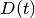, is the probability that a lineage at some point in time (i.e., a location on an observed branch of a phylogeny) gives rise to all observed downstream data – specifically, all the lineages descended from this particular point on the tree. The second equation, 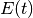, describes the probability that a lineage at the same point in time (along with all of its descendants) has gone extinct before the present. Letting  denote the speciation rate and
denote the speciation rate and  the extinction rate, we have:
the extinction rate, we have:
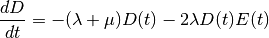
These equations are derived from considering the state space for all possible events that could have happened on some infinitesimal time interval  . For the extinction probability , BAMM assumes that any given interval of time can be described by one of the following events:
. For the extinction probability , BAMM assumes that any given interval of time can be described by one of the following events:

That is, a lineage alive at some time in the past can go extinct before the present (along with all of its descendants) if one of the following occurs on :
- Extinction on
This event occurs with probability proportional to
.
- Extinction on
- No extinction, no speciation
Nothing happens on the focal interval, but the lineage and all of its descendants goes extinct before the present. This event occurs with probability 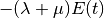.
- Speciation
A speciation event occurs on
, but both descendant lineages (and any additional descendants) go extinct before the present. This event occurs with probability proportional to 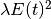.
These three terms are combined into the differential equation for the change in the extinction probability with respect to time, .
There is one curious feature of scenarios described above as used in BAMM, and it is that they neglect another type of event that could have occurred on . Specifically, it is possible that a lineage could have undergone a shift to an entirely new macroevolutionary rate regime, but that the lineage – along with all of its descendants – went extinct before the present. Specifically, we might augment the set of events presented above with a fourth case:

The heavy line in case (iv) represents a macroevolutionary rate regime that differs from the parent process. In the BAMM model, the rate at which new events occur is governed by a hierarchical Poisson distribution with rate  (the
(the eventRate parameter as output by BAMM is the product of and the total tree length). The probability of undergoing a rate shift is thus proportional to , but the probability of future extinction is not easily computed, because we do not know the parameters of the new rate regime. Formally, we might imagine a term  that describes the probability of future extinction for a lineage that has unknown evolutionary rate parameters, thus modifying the equation above to:
that describes the probability of future extinction for a lineage that has unknown evolutionary rate parameters, thus modifying the equation above to:
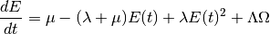
Thus, lineages shift to a new process on with probability proportional to , but then the process and all of its descendants go extinct before the present. Computing the probability is, in our opinion, not feasible. One would have to integrate over the chance of extinction for all possible diversification histories, weighting each history by its relative probability. We have very little information about the universe of possible diversification histories (and even less about the relative probabilities of those histories), so it seems like this is a quantity that cannot be computed. One possible solution may be to use empirical parameterizations, perhaps estimating the underlying distributions of diversification histories from the fossil record (or potentially, other molecular phylogenetic studies). However, we also suspect that the set of all processes (diversification shifts) that occurred but subsequently went extinct might be drawn from a different probability distribution than the set of processes that survived to the present to be observed. If this is true, then there is no possible information about that can be gained from molecular phylogenies alone.
What is the difference between this model and BiSSE (or related models), where lineages can shift to other evolutionary rate regimes (e.g., alternative character states)? The difference is that, in BiSSE, the parameters of the process are fixed, but the locations of the transitions are unknown. Hence, the BiSSE likelihood involves integration over all possible transitions in diversification processes, but there are a finite set of such processes (2 for BiSSE), and the parameters of the processes are known. Computing is an entirely different beast, because we need to integrate over all possible transitions to processes with unknown parameters and which are drawn from unknown probability density functions.
But we should note again that this leads to a weird condition in the BAMM model, which was not clearly discussed in Rabosky’s (2014) description of BAMM. In practical terms, the BAMM likelihood assumes that some lineages effectively see into the future and modify their event state space based on future outcomes: specifically, a lineage cannot undergo a rate shift if it is destined for extinction.
Fortunately, we haven’t seen any evidence that this assumption has consequences for inference. Moreover, qualitatively similar assumptions are fairly widespread in the modeling of diversification and phenotypic evolution. For example, several methods are available that compute diversification histories on phylogenetic trees assuming a fixed-in-advance number of diversification shifts. The “split” class of models for state-dependent diversification (e.g., split BiSSE) would be one such example: the likelihood is computed under a model that presupposes a shift in diversification rates at a particular location on the tree, but the E(t) and D(t) calculations do not account for a stochastic process that could have generated shifts to other (potentially unknown, unobserved) diversification processes. In fact, any method of modeling diversification that allows heterogeneous extinction processes across the tree (e.g., MEDUSA) is formally making the same assumption as BAMM, because the models do not allow lineages destined for future extinction (the component of the likelihood) to undergo diversification rate shifts.
But I should be clear about my view that none of this is likely to matter in practice. And in any event, it’s testable. Just simulate data with rate shifts (some of which may lead to extinct clades in their entirety), and see if it has any consequences for inference about the set of processes inferred for the observed part of the tree. We’ve done this and have found no consequences for inference, but perhaps you’ll find something different.
11.2. Extinction calculations at nodes¶
In BiSSE and related models, the extinction probabilities at internal nodes are always identical for a given character state. The occurrence of a speciation event does not change the probability of extinction for a lineage in the i’th character state. That is, if a speciation event happens at time  , and if a lineage is in state i, the probability of extinction after some infinitesimal interval before the speciation event will be very similar to the probability of extinction after the speciation event 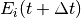. This is because the 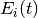 term integrates over all diversification histories that could have occurred while yielding an extinct clade given that the lineage is currently (at time ) in state
, and if a lineage is in state i, the probability of extinction after some infinitesimal interval before the speciation event will be very similar to the probability of extinction after the speciation event 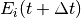. This is because the 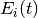 term integrates over all diversification histories that could have occurred while yielding an extinct clade given that the lineage is currently (at time ) in state  .
.
Because BAMM does not allow rate shifts on unobserved lineages (because we cannot analytically solve the differential equation above that contains a 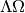 term, as explained above), BAMM must deal with the scenario where the extinction probabilities at internal nodes differ on the right and left descendant branches, which we will denote by 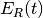 and . For a given internal node, it is possible that and will not be equal if there is a rate shift on the right, left, or both descendant branches (or any of their descendant lineages). We thus need to condition our calculations on the occurrence of a rate shift.
To be clear, this is not a BAMM problem per se. This scenario arises in all models that allow diversification shifts on particular lineages (or at particular nodes) but that do not allow rate shifts on unobserved lineages. In other words, this issue is relevant to all models that purport to compute the likelihood of a rate shift on a phylogenetic tree when  . Widely-used approaches that must confront this issue include the MEDUSA model, the ‘split’ option for BiSSE, QuaSSE, and related models, the DDD models with different shift regimes on specific subclades, and multi-process shift models as currently implemented in RPANDA.
. Widely-used approaches that must confront this issue include the MEDUSA model, the ‘split’ option for BiSSE, QuaSSE, and related models, the DDD models with different shift regimes on specific subclades, and multi-process shift models as currently implemented in RPANDA.
We do not know how all of these models handle the scenario where and are different (at the time of this writing, there are at least 3 different ways that the implementations listed above deal with this). Our approach in BAMM is the following:
- If the right and left branches are identical in diversification history (no shifts occur anywhere on any downstream branches), and there is no need to condition the extinction probability on the occurrence of any rate shifts. The initial extinction probability on the parent branch is equal to the value at the end of (either) descendant branch.
- If the right and left branches are not identical in diversification history (e.g., at least one rate shift occurs somewhere downstream, such that 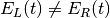), we set the initial extinction probability at the start of the branch upstream of the node equal to 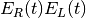.
We cannot guarantee that this is the optimal way of doing this, but to our knowledge, there has been no exploration of this issue.
11.3. Is the BAMM likelihood computed correctly?¶
Given the model and its assumptions (see above), we now turn to a different question: is BAMM correctly computing the likelihood of the process described above? As an independent test of this, we implemented the BAMM likelihood function in R (BAMMtools v2.1) and have created a tool that enables users to test whether BAMM is doing what it is supposed to be doing. This assumes, of course, that we have also implemented the likelihood function correctly in R, but we hope that other researchers find it easier to evaluate our R code than the BAMM C++ code itself.
The function BAMMlikelihood will return the log-likelihood for a given configuration of events (and associated parameters) on a phylogenetic tree. Let’s do this using the built-in whales dataset in BAMMtools:
library(BAMMtools)
data(whales, mcmc.whales, events.whales)
We need to make sure we are considering precisely the same generations for the mcmc file as for the event data file, so we will get the intersection of these and just take 50 of them for some representative calculations:
iset <- intersect(mcmc.whales$generation, events.whales$generation)
iset <- iset[round(seq(1, length(iset), length.out=50))]
events <- events.whales[events$generation %in% iset, ]
mcmc <- mcmc.whales[mcmc.whales$generation %in% iset, ]
We also need to ensure that we use exactly the same segLength parameter for these calculations that were used for the BAMM analysis (see here for more info on this). Now we compute the likelihood of the final generation:
BAMMlikelihood(whales, events.whales, gen="last", segLength = 0.02)
# which returns:
[1] -271.5134
mcmc$logLik[nrow(mcmc)]
# which returns:
[1] -271.513
So, close – but are they close enough? Let’s do 50 samples:
ll <- BAMMlikelihood(whales, events2, gen = "all", segLength = 0.02)
plot(mcmc$logLik ~ ll)
lines(x=c(-350,-250), y=c(-350, -250), lwd=1, col='red')
These should look precisely identical (please let us know if for some reason they appear to be different!). We can look at the average and maximum differences between these values:
mean(abs(ll - mcmc$logLik))
# which returns:
[1] 0.0002577647
max(abs(ll - mcmc$logLik))
# which returns:
[1] 0.000505146
With this set of 50 samples, we see that the maximum difference between likelihoods computed by BAMM and by an independent R implementation is a very small number, which suggests that BAMM is doing what it should be doing. Again, this assumes that the R implementation is also correct – e.g., that we haven’t just re-implemented a set of incorrect equations into R. As one additional test, we will compute the likelihoods of a phylogeny using another implementation of the birth-death process. We will use Rich FitzJohn’s excellent diversitree package for this. The likelihoods in diversitree and BAMM aren’t exactly identical, because the diversitree log-likelihoods include a constant term sum(log(2:(N - 1))), where N is the number of tips in the tree. However, since all diversitree log-likelihoods contain this term (it is a constant that depends solely on the number of tips in the tree), we can merely subtract it to attain the BAMM likelihood (for the constant rate process):
library(diversitree)
lfx <- make.bd(whales)
constant <- sum(log(2:(ntips - 1)))
parvec1 <- c(0.1, 0.05)
names(parvec1) <- c("lambda", "mu")
# the diversitree log-likelihood, minus the constant term
lfx(parvec1) - constant
[1] -282.386
# BAMM log-likelihood for the same parameters:
BAMMlikelihood(whales, parvec1)
[1] -282.386
# Another parameter set:
parvec2 <- c(0.5, 0.49)
names(parvec2) <- c("lambda", "mu")
# here's the diversitree log-likelihood, minus the constant term
lfx(parvec2) - constant # diversitree log-likelihood
[1] -312.8122
# The BAMM log-likelihood:
BAMMlikelihood(whales, parvec2)
[1] -312.8122
Although the diversitree functions do not (at present) allow us to compute the likelihood of a multi-process model (e.g., a BAMM event configuration with 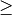 1 rate shift), we can verify that BAMM, diversitree, and the BAMMlikelihood function from BAMMtools compute precisely the same log-likelihood for a given parameterization of the constant-rate birth-death process.
While we are at it, this function also allows us to estimate how much slower BAMM would be if it performed calculations in R with no calls to underlying C++ or C code. On my machine, it takes approximately 0.175 seconds to perform a single likelihood calculation (for the whales data) using the BAMMlikelihood function. For comparison, I can do approximately 10,000 generations of MCMC simulation on the same dataset per second, and the likelihood computation itself is (very conservatively) 20% of the total computation time required to execute a single generation of MCMC sampling (thus, 80% of the time BAMM is running, it is doing something other than computing the likelihood).
Using these (very rough) numbers, I estimate that BAMM can do 10,000 / 0.2 = 50,000 likelihood calculations per second. Dividing this number by the time to compute the likelihood in R, we get 50,000 / 0.175 280000. So, BAMM’s C++ implementation is (very approximately) about 5 orders of magnitude faster than a pure R-based implementation would be for a tree of this size.
11.4. Numerical approximations in BAMM¶
BAMM makes several numerical approximations that we will state here explicitly.
11.4.1. Discretization of evolutionary rates for the time-varying process¶
BAMM uses a “fast” form of numerical integration where branches of a phylogeny are broken into segments of relative length segLength and a constant-rate birth-death process is assumed on each interval. Thus, for a time-varying diversification process, we discretize the exponential change process into units defined by segLength. This allows for much faster calculations relative to more accurate forms of numerical integration. To be clear, the likelihood itself is not approximated: it is the rates that are approximated (which may, in turn, affect the likelihood). In any event, the consequences of this are easy to test. Here, we will use the functions and data from this section and explore the consequences of segLength.
If the segment size is greater than the length of a given branch, BAMM will treat the branch as a single segment (e.g., a mean value for and will be computed for the branch, and they will be passed to the speciation-extinction equations for the constant-rate birth-death process). If segLength = 1.0, then no splitting will occur on any branches: mean rates will be computed for each branch. If segLength = 0.02, branches will be split into segments with length equal to 2% of the crown depth of the tree. Here are some comparisons:
# the coarsest possible discretization:
BAMMlikelihood(whales, events, gen="last", segLength = 1)
[1] -273.1068
# getting finer
BAMMlikelihood(whales, events, gen="last", segLength = 0.1)
[1] -272.0331
# the default value (BAMM v 2.5)
BAMMlikelihood(whales, events, gen="last", segLength = 0.02)
[1] -271.5134
# and a very fine partitioning:
BAMMlikelihood(whales, events, gen="last", segLength = 0.0001)
[1] -271.4763
Despite the 200-fold difference in the grain (0.02 v 0.001), the difference in log-likelihoods is marginal ( 0.037), and it comes at a significant computational cost (approximately 200x increase in the number of operations required to compute the likelihood). Please let us know if you find that any inferences are affected by use of the defaults for segLength.
For a set of time-homogeneous diversification processes, e.g., 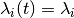 and , the BAMM likelihood will be exact. segLength will only influence the calculations when rates vary as a continuous function of time.
11.4.2. Maximum possible extinction probability¶
Some parameter values may lead to extinction probabilities that are sufficiently close to 1.0 that they are subject to numerical underflow/overflow issues. Specifically, if the equations described above take a value that is numerically indistinguishable from 1, the likelihood of the data will be  . To ensure that this rejection is platform independent, BAMM automatically rejects any moves (by setting the log-likelihood equal to -INF) where the extinction probability exceeds a predetermined threshold value. This threshold is
. To ensure that this rejection is platform independent, BAMM automatically rejects any moves (by setting the log-likelihood equal to -INF) where the extinction probability exceeds a predetermined threshold value. This threshold is extinctionProbMax and can be set manually in the control file. Note that this is not the extinction rate: it is the maximum permitted value of in the differential equations above, or the probability that a lineage at some time (along with all of its descendants) has gone extinct before the present).